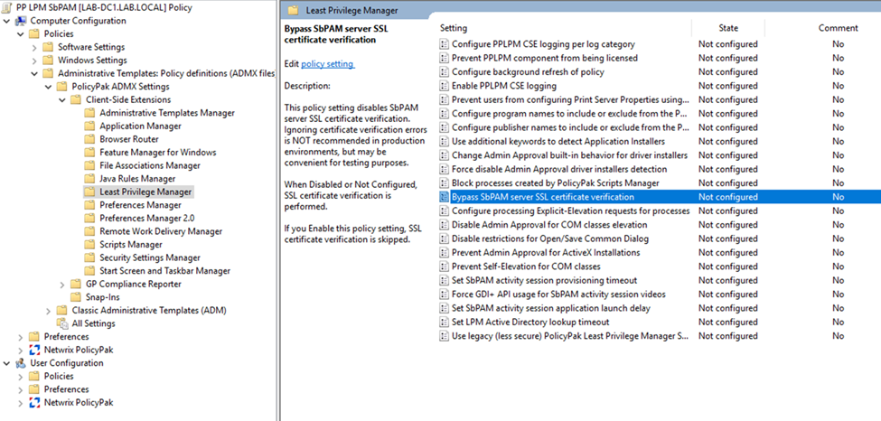
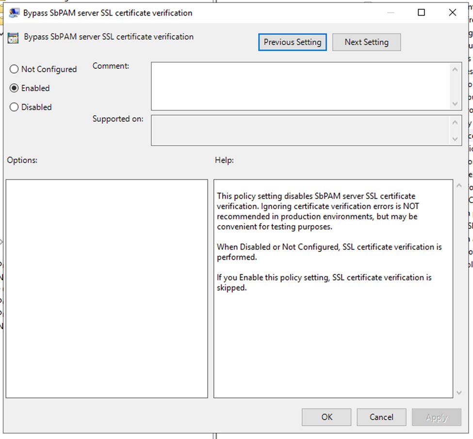
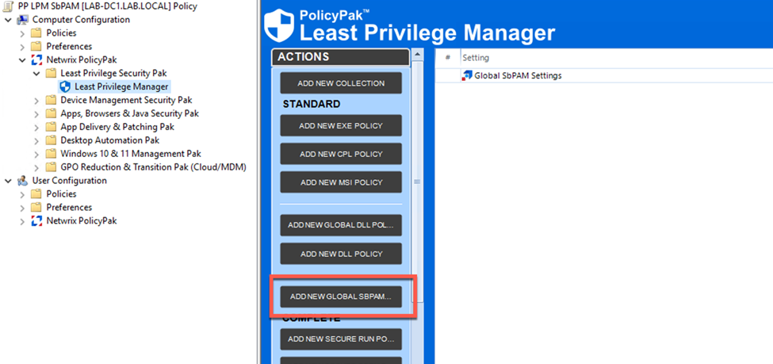
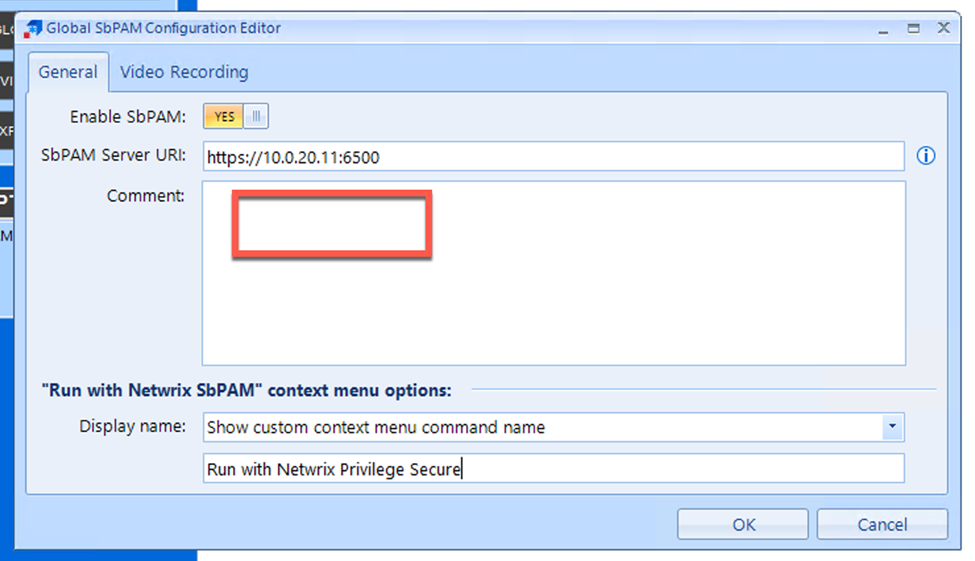
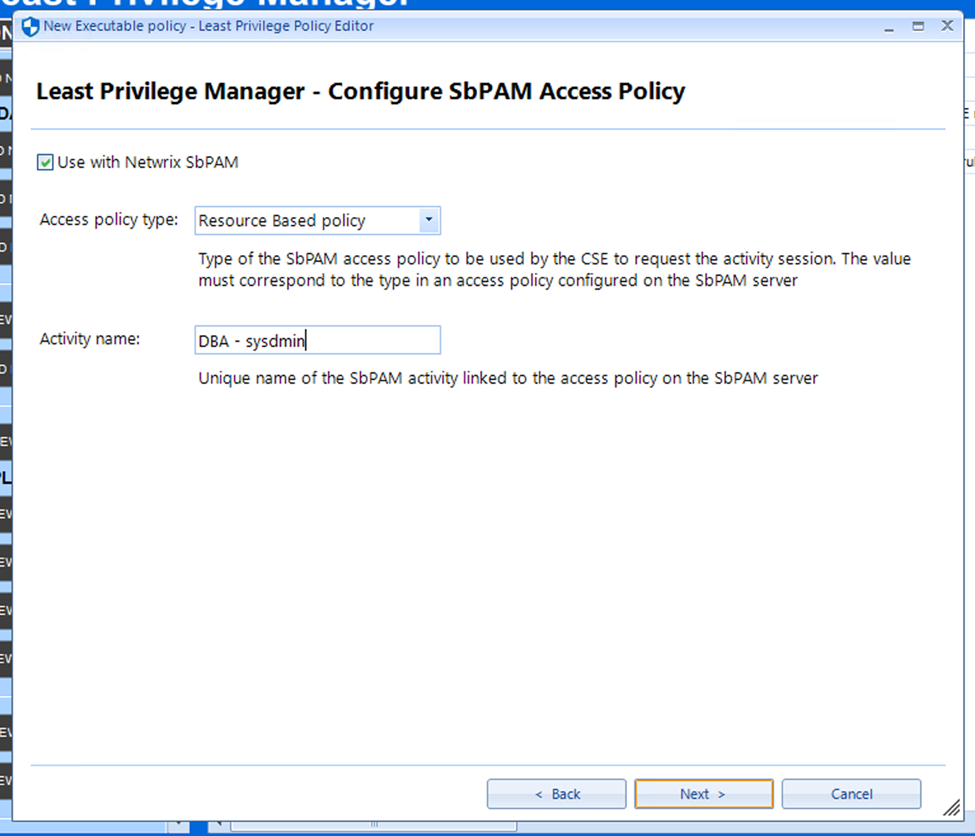
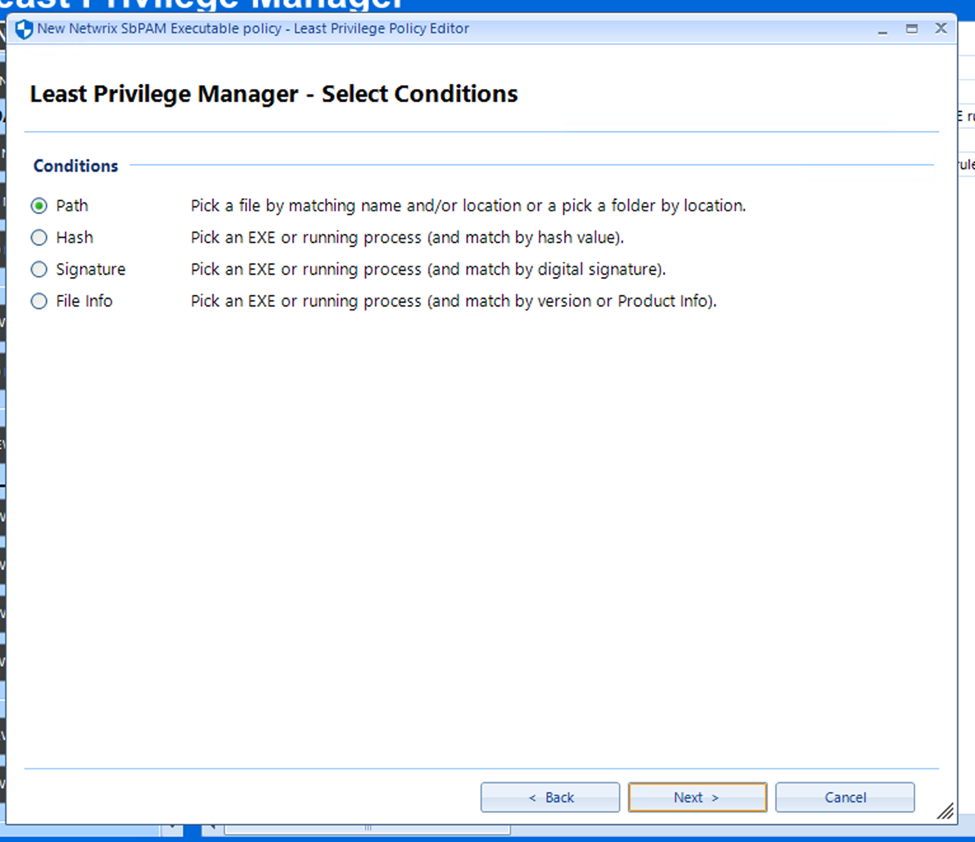
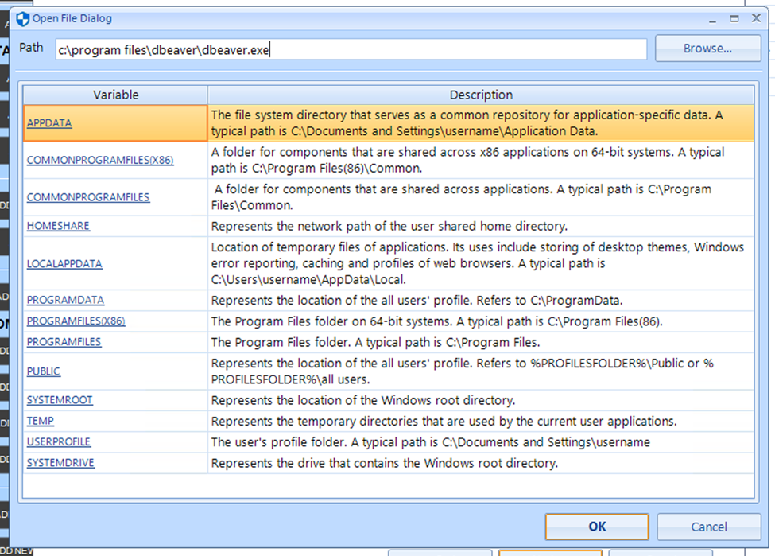
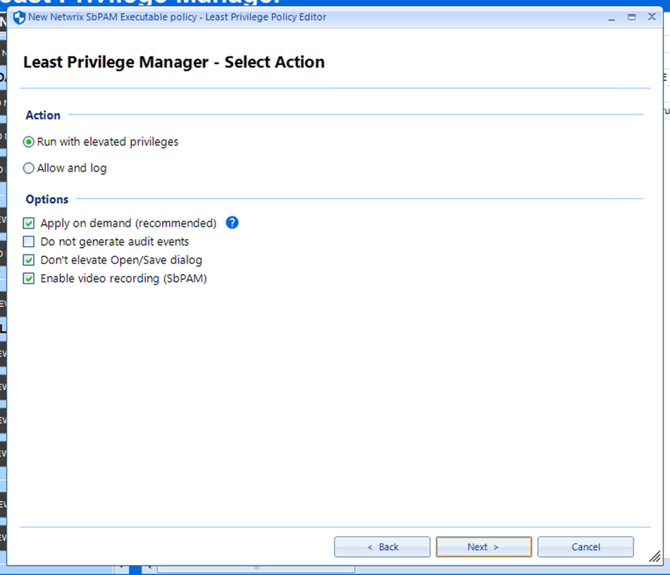
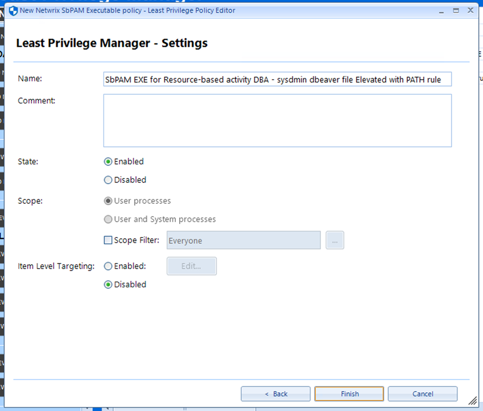

Summary
This article outlines the process of configuring Netwrix PolicyPak to integrate with Privilege Secure. This integration allows PolicyPak to be granted on-demand privilege elevation when launching a specified program from a server or workstation. It is assumed that PolicyPak is already installed and configured. In this example we will configure the integration with "dbeaver.exe", but the configured program can be anything.Additionally, the PolicyPak documentation offers two video demos that outline the NPS/PolicyPak integration.
Instructions
1. On the PolicyPak server, locate the PolicyPak installer's zip archive. This archive will contain a directory with the following name:\PolicyPak ADMX (Troubleshooting)\PolicyDefinitions\2. Reference this PolicyPak video to decide how you want to implement the ADMX settings.
3. Create a domain-based GPO (GPMC.MSC) or a local Group Policy (GPEDIT.MSC), and ensure the endpoint machine(s) will be addressed. Navigate to the "Bypass SbPAM server SSL certificate verification" setting under the indicated path:

4. Set the setting to "Enabled" and select "OK".

5. In PolicyPak, navigate to "Add New Global SbPAM Configuration":

6. Configure the Privilege Secure URI, formatted as indicated, and select "Enable SbPAM":

7. A new desktop launch policy can now be created. In PolicyPak, click "New Executable Policy". Select "Use with Netwrix SbPAM" and assign a policy type and activity name matching the Access Policy and Activity you wish to use. The name of the access policy should exactly match its name in Privilege Secure. Click "Next".

8. Choose the "Path" condition.

9. Specify the path of the program to be launched. Click "OK".

10. Select "Run with elevated privileges" on the Select Action window. The options indicated are strongly recommended, but can be configured as needed. Click "Next".

11. Finally, ensure that your policy is Enabled, and select Finish.

12. You should now be able to launch the indicated program with elevated privileges by right-clicking and selecting the PolicyPak context menu entry.